- Главная
- Преподаватели
Преподаватели
Школу основали преподаватели английского и японского языков Оксана Александровна Батуро и Юлия Владимировна Суховетченко. Вот наша команда.
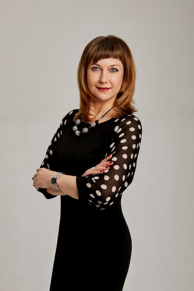
Батуро Оксана Александровна
Здравствуйте! Меня зовут Батуро Оксана Александровна. Я директор школы иностранных языков «Репетитор». Моё первое знакомство с английским языком состоялось, когда мои прозорливые родители отдали меня изучать его на год раньше моих одноклассников в другую школу к своей подруге – учительнице английского. Не скажу, что меня это очень обрадовало, ведь приходилось ездить на другой конец города, да ещё и в чужой класс! Но когда английский начался по программе в школе, мне не было равных. Ведь к тому времени я уже умела, и читать и писать, да и слов немало знала. И тут, я думаю, началась моя преподавательская карьера – надо было помочь всем одноклассникам понять и усвоить в срок все премудрости этого предмета. Изучать английский дополнительно я продолжила по настоятельной рекомендации все тех же мудрых родителей, и результатом стал выигранный конкурс на знание английского и годовое обучение в США. Вернувшись в Россию, я продолжила изучать языки, перейдя на японский. Продолжилась и моя преподавательская деятельность, но уже на профессиональном уровне – с 4 курса университета я преподавала в разных школах и ВУЗах нашего города. И, несмотря на то, что я пробовала себя и в других сферах, связанных с языком – была и переводчиком и гидом, преподавание всегда занимало важное место в моей жизни. Ведь это так здорово знать что-то и уметь научить, передать свои знания! А потом пришел опыт и понимание, что есть способы учить лучше – используя более современные программы, новые методики обучения, другой подход. Тут то и возникла идея создания своей школы, где все это можно внедрять и использовать! Благодаря успешной многолетней работе школы тысячи ребят осознали, что иностранный язык может быть интересным, понятным, а главное любимым предметом в школе и очень полезным средством познания окружающего мира.
Читать полностьюСвернуть
Здравствуйте! Меня зовут Батуро Оксана Александровна. Я директор школы иностранных языков «Репетитор». Моё первое знакомство с английским языком состоялось, когда мои прозорливые родители отдали меня изучать его на год раньше моих одноклассников в другую школу к своей подруге – учительнице английского. Не скажу, что меня это очень обрадовало, ведь приходилось ездить на другой конец города, да ещё и в чужой класс! Но когда английский начался по программе в школе, мне не было равных. Ведь к тому времени я уже умела, и читать и писать, да и слов немало знала. И тут, я думаю, началась моя преподавательская карьера – надо было помочь всем одноклассникам понять и усвоить в срок все премудрости этого предмета. Изучать английский дополнительно я продолжила по настоятельной рекомендации все тех же мудрых родителей, и результатом стал выигранный конкурс на знание английского и годовое обучение в США. Вернувшись в Россию, я продолжила изучать языки, перейдя на японский. Продолжилась и моя преподавательская деятельность, но уже на профессиональном уровне – с 4 курса университета я преподавала в разных школах и ВУЗах нашего города. И, несмотря на то, что я пробовала себя и в других сферах, связанных с языком – была и переводчиком и гидом, преподавание всегда занимало важное место в моей жизни. Ведь это так здорово знать что-то и уметь научить, передать свои знания! А потом пришел опыт и понимание, что есть способы учить лучше – используя более современные программы, новые методики обучения, другой подход. Тут то и возникла идея создания своей школы, где все это можно внедрять и использовать! Благодаря успешной многолетней работе школы тысячи ребят осознали, что иностранный язык может быть интересным, понятным, а главное любимым предметом в школе и очень полезным средством познания окружающего мира.
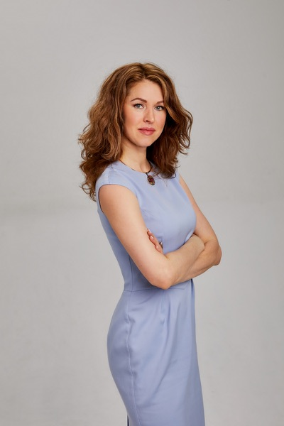
Суховетченко Юлия Владимировна
Здравствуйте! Меня зовут Юлия Владимировна Суховетченко. Я директор по учебной части в Школе Иностранных Языков «РЕПЕТИТОР». Почему я в этой профессии и как появилась идея создания собственной школы иностранных языков? Ещё будучи студенткой Восточного факультета Хабаровского Государственного Педагогического Университета я занималась частной преподавательской практикой и работала переводчиком. После окончания университета в 1999 году я работала в alma mater и других образовательных учреждениях Хабаровска. Как к преподавателю университета ко мне часто обращались с просьбами позаниматься иностранными языками и взрослые, и дети. И уже тогда мне стало ясно, что на рынке отсутствует предложение качественного обучения иностранным языкам для детей дошкольного и младшего школьного возраста. После того, как у меня родился сын, желание создать свою школу иностранных языков только укрепилось. Я знала, что есть очень много таких же мам как я, которые хотели бы дать хорошее образование своим детям и не упустить время. Поэтому отпуск по уходу за ребенком стал еще и периодом сбора и накопления информации для образования нашей школы. В сотрудничестве с еще одной мамой - коллегой и профессионалом высокого класса, Оксаной Александровной Ториной, мы создали такую школу иностранных языков, где возраст учащихся начинается с 5 лет. На тот момент мы были единственной школой предлагающей изучение языков со столь раннего возраста. Любой желающий, будь то ребенок или взрослый, может прийти к нам и с удовольствием погрузиться в мир нового языка и культуры. В нашей школе мы воплотили все самое лучшее. Это и новейшие методы и техники преподавания, это и современное оборудование, это и уютные помещения. Но самое главное это наш коллектив, которым мы по праву гордимся!
Читать полностьюСвернуть
Здравствуйте! Меня зовут Юлия Владимировна Суховетченко. Я директор по учебной части в Школе Иностранных Языков «РЕПЕТИТОР». Почему я в этой профессии и как появилась идея создания собственной школы иностранных языков? Ещё будучи студенткой Восточного факультета Хабаровского Государственного Педагогического Университета я занималась частной преподавательской практикой и работала переводчиком. После окончания университета в 1999 году я работала в alma mater и других образовательных учреждениях Хабаровска. Как к преподавателю университета ко мне часто обращались с просьбами позаниматься иностранными языками и взрослые, и дети. И уже тогда мне стало ясно, что на рынке отсутствует предложение качественного обучения иностранным языкам для детей дошкольного и младшего школьного возраста. После того, как у меня родился сын, желание создать свою школу иностранных языков только укрепилось. Я знала, что есть очень много таких же мам как я, которые хотели бы дать хорошее образование своим детям и не упустить время. Поэтому отпуск по уходу за ребенком стал еще и периодом сбора и накопления информации для образования нашей школы. В сотрудничестве с еще одной мамой - коллегой и профессионалом высокого класса, Оксаной Александровной Ториной, мы создали такую школу иностранных языков, где возраст учащихся начинается с 5 лет. На тот момент мы были единственной школой предлагающей изучение языков со столь раннего возраста. Любой желающий, будь то ребенок или взрослый, может прийти к нам и с удовольствием погрузиться в мир нового языка и культуры.
В нашей школе мы воплотили все самое лучшее. Это и новейшие методы и техники преподавания, это и современное оборудование, это и уютные помещения. Но самое главное это наш коллектив, которым мы по праву гордимся!
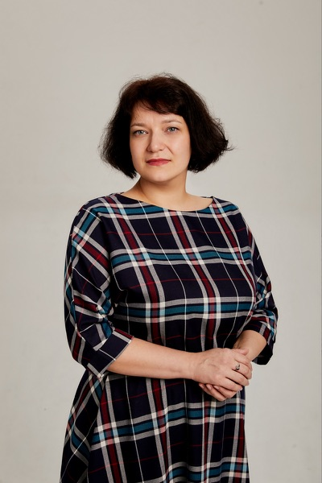
Потехина Маргарита Александровна
Зовут меня Потехина Маргарита Александровна. Я старший преподаватель школы иностранных языков «Репетитор». Работаю с детьми больше десяти лет, из них последние три года в нашей школе.
Читать полностьюСвернуть
Зовут меня Потехина Маргарита Александровна. Я старший преподаватель школы иностранных языков «Репетитор». Работаю с детьми больше десяти лет, из них последние три года в нашей школе.
Мою историю можно считать классической – сначала «учила» кукол, потом друзей и, наконец, детей. Первые три года своей учительской карьеры я работала в Благовещенском государственном педагогическом университете на кафедре английской филологии и параллельно с детьми в языковой школе при Педагогическом лицее. Потом менялись города и на какое-то время даже профессия, но, тем не менее, я вернулась на свое место – к детям. Когда огромные ясные глаза полные немого вопроса и интереса смотрят на тебя, понимаешь, что ты можешь многое. Можешь помочь этому юному человечку узнать чуть-чуть больше о нашем огромном многостороннем мире. На мой взгляд, в нашей профессии есть особая своеобразная прелесть: отдавая – многое получаешь в ответ. Доверие, интерес, благодарность, уважение, привязанность…
Наша школа «Репетитор» дает возможность детям и учителям полностью раскрыть свой потенциал, брать то, что ты хочешь знать, и возможность отдавать то, что ты знаешь.
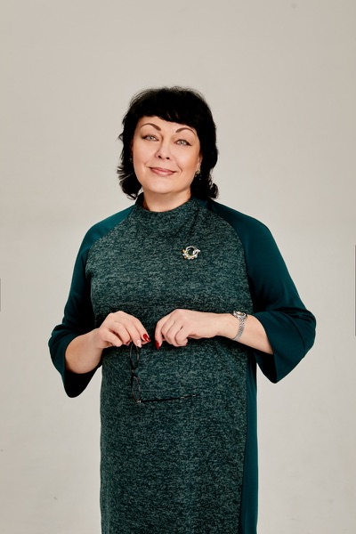
Иванова Инна Анатольевна
Меня зовут Инна Анатольевна Иванова. Имею богатый опыт работы в сфере образования: более 27 лет. Владею высоким уровнем английского языка. Осуществляла переводы для крупных компаний г. Хабаровска. В ШИЯ « Репетитор» работаю вот уже второй год. Меня привлекает возможность работать с учениками разных возрастов. С удовольствием, а иногда даже и с удивлением радуюсь успехам самых маленьких, пытливому интересу подростков и восторгаюсь упорству и настойчивости взрослых, идущих к своей цели. Ну, а моя задача, применить весь спектр своих педагогических знаний, руководствуясь личностным подходом к каждому ученику для увлекательного и эффективного погружения в мир иностранного языка.
Читать полностьюСвернуть
Меня зовут Инна Анатольевна Иванова. Имею богатый опыт работы в сфере образования: более 27 лет. Владею высоким уровнем английского языка. Осуществляла переводы для крупных компаний г. Хабаровска. В ШИЯ « Репетитор» работаю вот уже второй год. Меня привлекает возможность работать с учениками разных возрастов. С удовольствием, а иногда даже и с удивлением радуюсь успехам самых маленьких, пытливому интересу подростков и восторгаюсь упорству и настойчивости взрослых, идущих к своей цели. Ну, а моя задача, применить весь спектр своих педагогических знаний, руководствуясь личностным подходом к каждому ученику для увлекательного и эффективного погружения в мир иностранного языка.
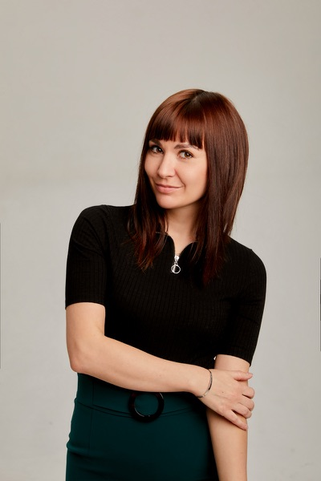
Пояркова Елена Николаевна
Здравствуйте! Меня зовут Пояркова Елена Николаевна. Я являюсь преподавателем английского языка в школе иностранных языков «Репетитор». Интерес к языку возник у меня еще с детства, когда я училась в начальной школе. Заметив это, мои родители сразу отдали меня на дополнительные уроки к репетитору. Так как иностранные языки давались мне легко, я решила стать учителем английского. После окончания университета, мне не терпелось начать свою Работу. Да, именно Работу с большой буквы, потому что профессия учителя, по моему мнению, это неимоверное счастьеи большое удовольствие. Подготовка к урокам, подбор дополнительных материалов, процесс проведения урока,организация праздников - все это приносит наслаждение и заряжает энергией и позитивом. Aиначе и быть не может, ведь я вижу результат своей работы – неподдельный интерес к предмету, новые навыки и умения, которые получают на моих уроках не только дети, но и взрослые учащиеся. Одним словом, я делаю, что люблю, и люблю то, что делаю.
Читать полностьюСвернуть
Здравствуйте! Меня зовут Пояркова Елена Николаевна. Я являюсь преподавателем английского языка в школе иностранных языков «Репетитор». Интерес к языку возник у меня еще с детства, когда я училась в начальной школе. Заметив это, мои родители сразу отдали меня на дополнительные уроки к репетитору. Так как иностранные языки давались мне легко, я решила стать учителем английского. После окончания университета, мне не терпелось начать свою Работу. Да, именно Работу с большой буквы, потому что профессия учителя, по моему мнению, это неимоверное счастьеи большое удовольствие. Подготовка к урокам, подбор дополнительных материалов, процесс проведения урока,организация праздников - все это приносит наслаждение и заряжает энергией и позитивом. Aиначе и быть не может, ведь я вижу результат своей работы – неподдельный интерес к предмету, новые навыки и умения, которые получают на моих уроках не только дети, но и взрослые учащиеся. Одним словом, я делаю, что люблю, и люблю то, что делаю.
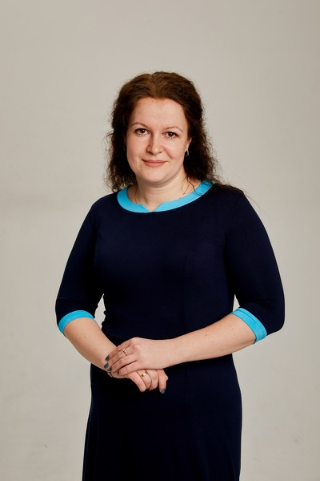
Беломестнова Ольга Владимировна
Здравствуйте! Меня зовут Беломестнова Ольга Владимировна. Преподаю иностранные языки уже 10 лет. Закончила Хабаровский Гуманитарный Университет, училась в Харбинском политехническом Университете; владею английским и китайским языками. Все эти годы я повышала и продолжаю повышать свою квалификацию. Иностранный язык- это не стихотворение, выучил и всё. Нужно постоянно читать, слушать, смотреть, посещать семинары, стажироваться с носителями языка. Я неоднократно проходила обучение в Москве на семинарах у автора уникального курса «Английский с колыбели» Ольги Львовны Соболевой, где получила огромный опыт работы с маленькими детьми.
Читать полностьюСвернуть
Здравствуйте! Меня зовут Беломестнова Ольга Владимировна. Преподаю иностранные языки уже 10 лет. Закончила Хабаровский Гуманитарный Университет, училась в Харбинском политехническом Университете; владею английским и китайским языками. Все эти годы я повышала и продолжаю повышать свою квалификацию. Иностранный язык- это не стихотворение, выучил и всё. Нужно постоянно читать, слушать, смотреть, посещать семинары, стажироваться с носителями языка. Я неоднократно проходила обучение в Москве на семинарах у автора уникального курса «Английский с колыбели» Ольги Львовны Соболевой, где получила огромный опыт работы с маленькими детьми.
На уроках стараюсь работать на результат, а не на выполнение программы, мыслить творчески. В работе с любой возрастной группой использую игры, песни; с малышами - пальчиковые игры на английском языке, танцы, различные сценки и многое другое.
Я очень люблю свою профессию и радуюсь каждому новому результату, любому достижению вместе с учеником.
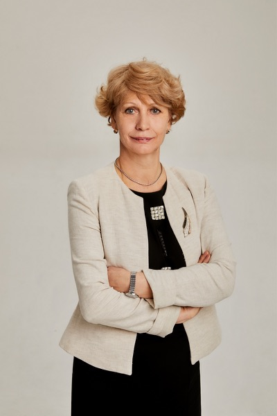
Иванова Татьяна Михайловна
Здравствуйте, меня зовут Иванова Татьяна Михайловна. Мое знакомство с работой учителя состоялось еще в раннем детстве, потому что моя мама, замечательный учитель, учила меня в начальной школе. Получив образование в г. Благовещенск, я посвятила всю свою жизнь работе с детьми. Я горжусь своими учениками, которые учились и учатся в ведущих ВУЗах страны, а так же постоянно стажируются за границей. Я считаю, что работа преподавателя – это важная составляющая развития современного общества и именно она позволяет воспитывать успешных людей, давать им шанс для построения карьеры и успешного старта в жизни. За свою преподавательскую жизнь, я неоднократно участвовала во множестве конкурсов, которые позволяли повысить мой профессиональный уровень, я становилась «Учителем Года», получала президентские и правительственные гранты и награды. Я уверена, что мое профессиональное развитие помогает мне в нелегком, но таком приятном процессе обучения детей.
Читать полностьюСвернуть
Здравствуйте, меня зовут Иванова Татьяна Михайловна. Мое знакомство с работой учителя состоялось еще в раннем детстве, потому что моя мама, замечательный учитель, учила меня в начальной школе. Получив образование в г. Благовещенск, я посвятила всю свою жизнь работе с детьми. Я горжусь своими учениками, которые учились и учатся в ведущих ВУЗах страны, а так же постоянно стажируются за границей. Я считаю, что работа преподавателя – это важная составляющая развития современного общества и именно она позволяет воспитывать успешных людей, давать им шанс для построения карьеры и успешного старта в жизни. За свою преподавательскую жизнь, я неоднократно участвовала во множестве конкурсов, которые позволяли повысить мой профессиональный уровень, я становилась «Учителем Года», получала президентские и правительственные гранты и награды. Я уверена, что мое профессиональное развитие помогает мне в нелегком, но таком приятном процессе обучения детей.
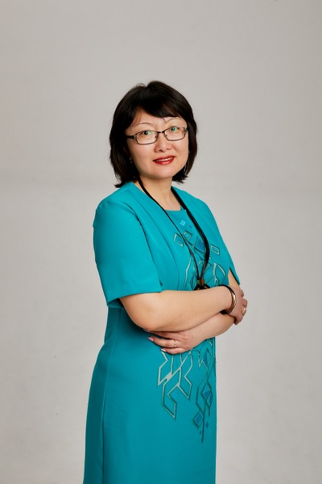
Пак Инна Борисовна
Здравствуйте! Меня зовут Пак Инна Борисовна. Я окончила Хабаровский Государственный Педагогический Университет. В сфере образования работаю уже более 16 лет. За годы работы поняла одну, как я считаю, важную вещь: нельзя научить человека ничему, а особенно языку, если у него нет желания. Первое, что стараюсь сделать с такими учениками- это пробудить в них интерес к учебе и языку. В школе работаю с учащимися разных возрастов, начиная с малышей 5-6 лет и заканчивая взрослыми людьми. Для меня каждый ученик – это индивидуальность. Мне нравится делиться своими знаниями и получать новые. Очень приятно и радостно видеть, как учащийся, еще недавно не умеющий и пары слов связать, начинает доказывать родителям, что он прав при выполнении того или иного задания . И ведь действительно прав! Учить языки это так интересно и необходимо!
Читать полностьюСвернуть
Здравствуйте! Меня зовут Пак Инна Борисовна. Я окончила Хабаровский Государственный Педагогический Университет. В сфере образования работаю уже более 16 лет. За годы работы поняла одну, как я считаю, важную вещь: нельзя научить человека ничему, а особенно языку, если у него нет желания. Первое, что стараюсь сделать с такими учениками- это пробудить в них интерес к учебе и языку. В школе работаю с учащимися разных возрастов, начиная с малышей 5-6 лет и заканчивая взрослыми людьми. Для меня каждый ученик – это индивидуальность. Мне нравится делиться своими знаниями и получать новые. Очень приятно и радостно видеть, как учащийся, еще недавно не умеющий и пары слов связать, начинает доказывать родителям, что он прав при выполнении того или иного задания . И ведь действительно прав! Учить языки это так интересно и необходимо!
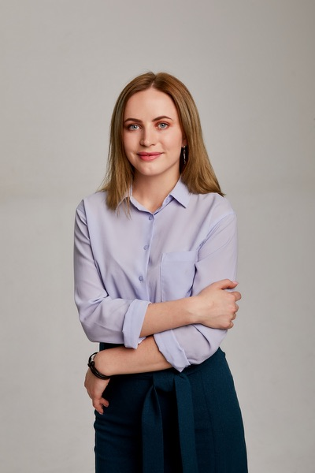
Ананьева Татьяна Григорьевна
Здравствуйте! Меня зовут Ананьева Татьяна Григорьевна, в профессии учителя я уже более пяти лет: это не так уж много, потому что пространство для роста безгранично, и одновременно не мало, ведь каждый день работы с детьми - это уникальный опыт.
Читать полностьюСвернуть
Здравствуйте! Меня зовут Ананьева Татьяна Григорьевна, в профессии учителя я уже более пяти лет: это не так уж много, потому что пространство для роста безгранично, и одновременно не мало, ведь каждый день работы с детьми - это уникальный опыт.
Я убеждена, что результата в изучении языка можно достичь только когда:
• сам процесс доставляет удовольствие. Поэтому считаю, что успех неизбежен
• если удалось зажечь огонь в глазах, развить любопытство, интерес
• уверенность и умение с юмором относится к трудностям и ошибкам
Своим собственным примером я показываю ученикам, что изучение английского бесконечный процесс, всегда можно узнать что-то новое и интересное, а знание языка может сделать жизнь легче и разнообразней, даже на Дальнем Востоке России:)
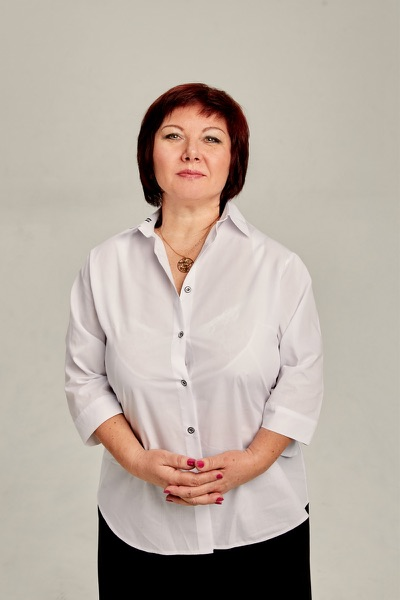
Пасечник Ирина Анатольевна
Здравствуйте! Меня зовут Пасечник Ирина Анатольевна. Мне не трудно было выбирать свою профессию, потому что с раннего детства я чему-то учила своих кукол, а когда старшая сестра начала изучать английский в школе, то я повторяла за ней слова, и этому же учила и кукол. В 1985 году я окончила Измаильский педагогический институт на Украине и являюсь учителем английского и немецкого языков. Мой педагогический стаж около 30 лет. Мой трудовой стаж начался с сельской школы в Приморье, потом, переехав в Хабаровск, я работала учителем английского языка и директором одной из хабаровских школ. Но мне захотелось чего-то нового в профессии, поэтому я окончила специальные курсы гидов-переводчиков и 5 лет работала в одной из турфирм Хабаровска. Но я поняла, что профессия гида-переводчика мне не настолько интересна, как профессия преподавателя и я вернулась в сферу образования, продолжив работать в двух вузах г. Хабаровска: в ДВГУПСе и ДВГАФКе, преподавая английский язык и другие гуманитарные дисциплины по туризму в должности доцента. Мне нравится исследовательская деятельность, поэтому в период работы в вузах, я написала два учебных пособия на английском языке по туризму и истории развития Дальнего Востока, последнее из которых заняло первое место среди вузов Дальнего Востока как лучшее учебное пособие на иностранном языке.
Читать полностьюСвернуть
Здравствуйте! Меня зовут Пасечник Ирина Анатольевна. Мне не трудно было выбирать свою профессию, потому что с раннего детства я чему-то учила своих кукол, а когда старшая сестра начала изучать английский в школе, то я повторяла за ней слова, и этому же учила и кукол. В 1985 году я окончила Измаильский педагогический институт на Украине и являюсь учителем английского и немецкого языков. Мой педагогический стаж около 30 лет. Мой трудовой стаж начался с сельской школы в Приморье, потом, переехав в Хабаровск, я работала учителем английского языка и директором одной из хабаровских школ. Но мне захотелось чего-то нового в профессии, поэтому я окончила специальные курсы гидов-переводчиков и 5 лет работала в одной из турфирм Хабаровска. Но я поняла, что профессия гида-переводчика мне не настолько интересна, как профессия преподавателя и я вернулась в сферу образования, продолжив работать в двух вузах г. Хабаровска: в ДВГУПСе и ДВГАФКе, преподавая английский язык и другие гуманитарные дисциплины по туризму в должности доцента. Мне нравится исследовательская деятельность, поэтому в период работы в вузах, я написала два учебных пособия на английском языке по туризму и истории развития Дальнего Востока, последнее из которых заняло первое место среди вузов Дальнего Востока как лучшее учебное пособие на иностранном языке.
Я очень люблю свою профессию и горжусь ею. Я считаю, что это самый благодарный труд, потому что всегда получаю отдачу от детей и их родителей, восполняя тем самым затраченную энергию. Поэтому ещё больше хочется творить, видеть блеск в глазах детей и их желание узнавать что-то новое и интересное, ведь английский язык играет большую роль в расширении кругозора учащихся и развитии их интеллекта! Каждый урок-это шаг в неизведанное и новое…
Мой профессиональный опыт – это мое богатство, поэтому я использую его для плодотворной работы в Школе иностранных языков «Репетитор», где работаю с 2014 года. Мне нравится здесь работать, потому что у нас прекрасный коллектив и созданы все условия для успешной работы.
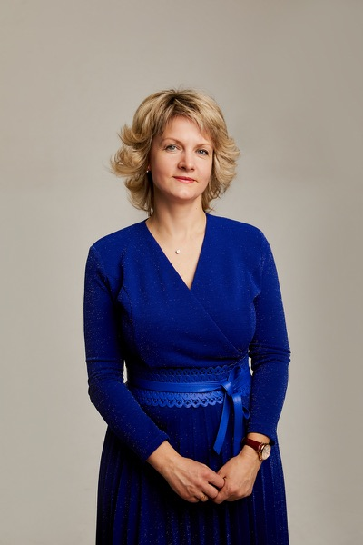
Тимофеева Наталья Григорьевна
Я получила образование в Хабаровском Государственном Педагогическом Университете по специальности "Иностранные языки". Моя жизнь сложилась таким образом, что мне удалось получить успешный опыт работы в разных сферах деятельности: педагогическая деятельность, работа переводчиком, работа менеджером среднего звена в иностранных компаниях - владение иностранными языками предоставляет хорошие возможности в жизни. Но достигнув определенных результатов в карьере, я задумалась, а какая работа и какие результаты приносят мне наибольшее моральное удовлетворение. И вернулась к педагогике, потому что это и есть самое главное и самое ценное в жизни: вложить в ребенка свои знания, поделиться умениями, настроить на успех, в общем, приложить максимум усилий к успешному старту. Это нелегкая работа, но пользы в ней реально намного больше, чем в любом другом бизнесе. Уже третий год как я вернулась в преподавательскую деятельность и очень рада тому, что работаю в коллективе профессионалов школы «Репетитор», для которых преподавание английского не просто работа, а еще и любимое хобби.
Читать полностьюСвернуть
Я получила образование в Хабаровском Государственном Педагогическом Университете по специальности "Иностранные языки". Моя жизнь сложилась таким образом, что мне удалось получить успешный опыт работы в разных сферах деятельности: педагогическая деятельность, работа переводчиком, работа менеджером среднего звена в иностранных компаниях - владение иностранными языками предоставляет хорошие возможности в жизни. Но достигнув определенных результатов в карьере, я задумалась, а какая работа и какие результаты приносят мне наибольшее моральное удовлетворение. И вернулась к педагогике, потому что это и есть самое главное и самое ценное в жизни: вложить в ребенка свои знания, поделиться умениями, настроить на успех, в общем, приложить максимум усилий к успешному старту. Это нелегкая работа, но пользы в ней реально намного больше, чем в любом другом бизнесе. Уже третий год как я вернулась в преподавательскую деятельность и очень рада тому, что работаю в коллективе профессионалов школы «Репетитор», для которых преподавание английского не просто работа, а еще и любимое хобби.
Баранская Наталия Викторовна
Свои первые английские слова я произнесла раньше, чем русские. И с самого раннего детства английский язык сопровождал меня повсюду. Постоянные конкурсы, олимпиады, иностранные гости у нас дома… Я полюбила его так, что уже не представляла свою жизнь и работу без него. Еще в студенческие годы я начала преподавать в школе иностранных языков «Репетитор», прекрасно ладила с дошколятами, но диплом по специальности «экономист-международник» с тремя иностранными языками в нем, в результате привел меня в крупный международный банк. Очень скоро я поняла, что редкие устные переводы для иностранных коллег не заменят полноценного живого общения. Тогда я в прямом смысле «сбежала» обратно к детям, которые ждут, которым можно и нужно передавать любовь к языку, культуре, расширять границы восприятия мира. Ведь именно дети будут создавать мир, в котором мы будем жить через много лет, и именно от нас сейчас зависит, каким будет этот мир. Получив диплом по специальности «учитель английского языка», я окончательно укрепилась на своем месте. И теперь каждый новый день – это возможность делиться тем, что я люблю больше всего – частичкой английского языка.
Читать полностьюСвернуть
Свои первые английские слова я произнесла раньше, чем русские. И с самого раннего детства английский язык сопровождал меня повсюду. Постоянные конкурсы, олимпиады, иностранные гости у нас дома… Я полюбила его так, что уже не представляла свою жизнь и работу без него. Еще в студенческие годы я начала преподавать в школе иностранных языков «Репетитор», прекрасно ладила с дошколятами, но диплом по специальности «экономист-международник» с тремя иностранными языками в нем, в результате привел меня в крупный международный банк. Очень скоро я поняла, что редкие устные переводы для иностранных коллег не заменят полноценного живого общения. Тогда я в прямом смысле «сбежала» обратно к детям, которые ждут, которым можно и нужно передавать любовь к языку, культуре, расширять границы восприятия мира. Ведь именно дети будут создавать мир, в котором мы будем жить через много лет, и именно от нас сейчас зависит, каким будет этот мир. Получив диплом по специальности «учитель английского языка», я окончательно укрепилась на своем месте. И теперь каждый новый день – это возможность делиться тем, что я люблю больше всего – частичкой английского языка.
Шипилова Анна Сергеевна
Здравствуйте! Меня зовут Шипилова Анна Сергеевна. Я преподаватель английского языка в школе иностранных языков "Репетитор" в группах учеников начальной и средней школы. Я закончила Хабаровский государственный педагогический университет по специальности учитель английского и немецкого языков. Долгое время после университета работала в представительстве иностранной корпорации, получила опыт работы с иностранцами, постоянно старалась развивать свои языковые навыки, была на стажировке в Японии, посетила и другие страны. Потом в течение нескольких лет я работала в гимназии с углубленным изучением английского языка. Когда я вернулась в систему образования, я осознала, что правильно выбрала себе данную профессию, так как она очень близка моему сердцу. Еще в детстве, обучаясь в школе с углубленным изучением английского языка, я поняла, что изучение данного предмета довольно увлекательный процесс. Английский был одним из моих любимых предметов, на уроках которого мы узнавали новое об англоязычных странах, строили увлекательные диалоги, сценки, иногда воображая себя иностранцами, пели и играли на иностранном языке. Это было всегда познавательно, интересно и весело. Моя первая учительница английского языка сумела так заинтересовать своим предметом, что в свободное время я представляла себя взрослой, и как я буду вести урок на английском языке, копируя её манеру: приветствовать учеников, давать им задания, ставить оценки, повторяя выражения классного обихода. И вот теперь каждый день я могу воплощать свою детскую мечту. Для меня очень важно, чтобы атмосфера на моем уроке была доброжелательной, приятной, ведь только тогда учитель может развить у детей желание заниматься данным предметом, совершенствовать свои умения. И когда я вижу, что ученики постепенно растут - это вдохновляет и заставляет искать и разрабатывать новые методы обучения. Таким образом, и учитель тоже постоянно развивается, и качество обучения улучшается. А владение английским языком, всем известно, открывает больше перспектив в жизни каждого человека.
Читать полностьюСвернуть
Здравствуйте! Меня зовут Шипилова Анна Сергеевна. Я преподаватель английского языка в школе иностранных языков "Репетитор" в группах учеников начальной и средней школы.
Я закончила Хабаровский государственный педагогический университет по специальности учитель английского и немецкого языков.
Долгое время после университета работала в представительстве иностранной корпорации, получила опыт работы с иностранцами, постоянно старалась развивать свои языковые навыки, была на стажировке в Японии, посетила и другие страны. Потом в течение нескольких лет я работала в гимназии с углубленным изучением английского языка.
Когда я вернулась в систему образования, я осознала, что правильно выбрала себе данную профессию, так как она очень близка моему сердцу. Еще в детстве, обучаясь в школе с углубленным изучением английского языка, я поняла, что изучение данного предмета довольно увлекательный процесс. Английский был одним из моих любимых предметов, на уроках которого мы узнавали новое об англоязычных странах, строили увлекательные диалоги, сценки, иногда воображая себя иностранцами, пели и играли на иностранном языке. Это было всегда познавательно, интересно и весело. Моя первая учительница английского языка сумела так заинтересовать своим предметом, что в свободное время я представляла себя взрослой, и как я буду вести урок на английском языке, копируя её манеру: приветствовать учеников, давать им задания, ставить оценки, повторяя выражения классного обихода. И вот теперь каждый день я могу воплощать свою детскую мечту. Для меня очень важно, чтобы атмосфера на моем уроке была доброжелательной, приятной, ведь только тогда учитель может развить у детей желание заниматься данным предметом, совершенствовать свои умения. И когда я вижу, что ученики постепенно растут - это вдохновляет и заставляет искать и разрабатывать новые методы обучения. Таким образом, и учитель тоже постоянно развивается, и качество обучения улучшается. А владение английским языком, всем известно, открывает больше перспектив в жизни каждого человека.
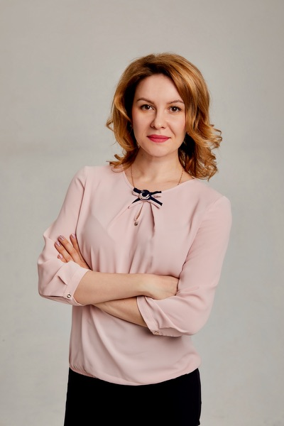
Куликова Наталия Владимировна
Здравствуйте! Меня зовут Куликова Наталия Владимировна, я являюсь преподавателем английского языка в школе "Репетитор". В школу я пришла по многим причинам. Во-первых, это любовь к детям, во-вторых, стремление приносить пользу обществу.
Читать полностьюСвернуть
Здравствуйте! Меня зовут Куликова Наталия Владимировна, я являюсь преподавателем английского языка в школе "Репетитор".
В школу я пришла по многим причинам. Во-первых, это любовь к детям, во-вторых, стремление приносить пользу обществу.
Работа в школе — это нечто большее, чем выполнение каких-либо обязанностей, со временем она становится образом жизни и существования. Ведь благодаря общению с детьми мы не стареем душой, не черствеем по отношению к окружающему миру, смотрим на мир глазами детства.
О себе могу сказать, что не могу быть скучным учителем. Заунывно читать монолог — не хочу. Зевоту и скуку с уроков прогнать можно, увлекая в мир мыслительных действий.
И я стараюсь сделать все от меня зависящее, для того, чтобы привить детям любовь к языку и оставить у детей приятные воспоминания от пребывания в стенах нашей школы.
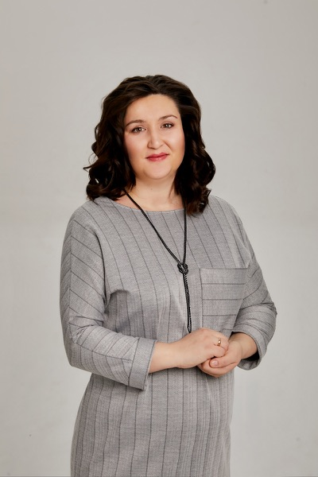
Рыжакова Кристина Олеговна
Зовут меня Рыжакова Кристина Олеговна. Родилась я в семье учителей, поэтому вопрос о выборе профессии решился сам собой. Дальше мне сложно было представить себя кем то другим. Хотя в пост-студенческие годы такие попытки были.
Читать полностьюСвернуть
Зовут меня Рыжакова Кристина Олеговна. Родилась я в семье учителей, поэтому вопрос о выборе профессии решился сам собой. Дальше мне сложно было представить себя кем то другим. Хотя в пост-студенческие годы такие попытки были.
Почему же учитель английского? Все просто, я очарована иностранными языками с детства. И все благодаря моему отцу. Именно он привил любовь к делу всей моей жизни.
В школе английский язык стал любимым предметом, и я его усердно учила. Этот увлекательный процесс продолжила в Хабаровском педагогическом колледже и далее в ДВГГУ. В университете я познакомилась с другими языками: немецким, японским и даже испанским. Изучение иностранных языков - это бесконечное путешествие и, несомненно, огромное удовольствие!
Я преподаю английский язык уже более 13 лет. Это не просто любимая работа, но и возможность расширить границы мира для себя и своих учеников, передать свою любовь к языку и энтузиазм. Эта профессия заставляет быть в постоянном развитии, движении, бесконечном совершенствовании и поиске новых форм и методов обучения и воспитания.
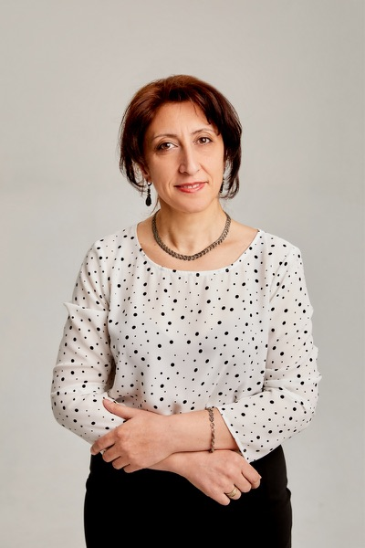
Барегамян Тагуи Ваняевна
Здравствуйте, меня зовут Барегамян Тагуи Ваняевна.
Читать полностьюСвернуть
Здравствуйте, меня зовут Барегамян Тагуи Ваняевна.
Более 15 лет я работаю педагогом, из которых последние 3 года в нашей школе "Репетитор". По второму образованию я - менеджер-экономист, работала руководителем в разных организациях, имею большой опыт общения с иностранцами, участвовала в разных тренингах и конференциях в Армении, в России и за рубежом.
Образование - это долгий процесс и повседневный труд как для педагога, так и для ребенка, и для родителей.
Обучая детей, я помогаю им узнать сегодняшний мир, познакомиться с разными народами, их обычаями и культурами. Вместе мы узнаем, какие общие проблемы есть в мире, и как мы можем участвовать в решении этих проблем.
Самый большой показатель моей добросовестной работы - это хорошие знания, довольные дети и родители.
Очень важно также понимание, что все мы стремимся к тому, чтобы будущее наших детей стало лучше!
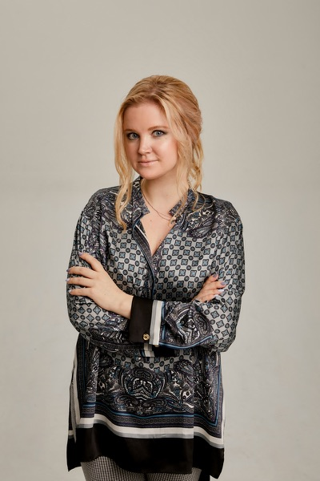
Горина Надежда Игоревна
Меня зовут Горина Надежда Игоревна.
Читать полностьюСвернуть
Меня зовут Горина Надежда Игоревна.
Я работаю преподавателем английского языка уже 13 лет, а влюблена в язык с детства.
Стараюсь постоянно совершенствоваться, узнавать что-то новое и не перестаю удивляться, сколько граней языка еще не изведаны😉
Для меня учить английскому - это транслировать детям желание общаться на другом языке, стремление к открытию новых горизонтов.
Ведь знание английского дает Вам множество возможностей: путешествовать, соприкоснуться с другими культурами, расширить кругозор.
Профессия преподавателя дает мне шанс не только учить, но и учиться у детей каждый день, что само по себе очень здорово, а в контексте изучения английского языка, это общение-постоянный энергообмен, который несомненно приносит свои плоды.
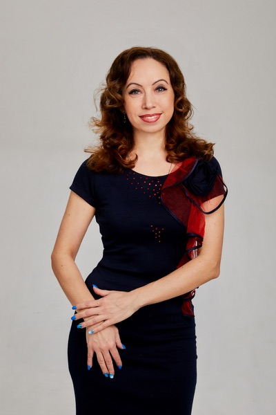
Качкурова Галина Юрьевна
Здравствуйте! Меня зовут Качкурова Галина Юрьевна. Я окончила Восточный факультет Хабаровского педагогического университета. После окончания университета работала старшим преподавателем в Институте лингвистики и межкультурной коммуникации. Занималась частной педагогической практикой. Но меня всегда привлекала возможность работать с детьми, начиная с младшего возраста, вести их на протяжении нескольких лет, наблюдая и радуясь их взрослению, росту и становлению как в личностном плане, так и, конечно, в плане освоения иностранного языка. В начале своего педагогического пути я окончила Педагогическое училище и какое-то время работала с детьми дошкольного возраста. Поэтому мне легко найти подход к детям дошкольного и младшего школьного возраста. Мне хорошо знакома их психология. Это всегда большая радость наблюдать, как результаты твоих трудов дают свои всходы, порой не сразу, постепенно, но верно. И каждый раз ты растешь сам со своими воспитанниками и учениками. Каждый ребенок уникален. Главное, найти индивидуальный подход и пробудить мотивацию к изучению иностранного языка. Я верю в каждого из своих учеников!
Читать полностьюСвернуть
Здравствуйте! Меня зовут Качкурова Галина Юрьевна. Я окончила Восточный факультет Хабаровского педагогического университета. После окончания университета работала старшим преподавателем в Институте лингвистики и межкультурной коммуникации. Занималась частной педагогической практикой. Но меня всегда привлекала возможность работать с детьми, начиная с младшего возраста, вести их на протяжении нескольких лет, наблюдая и радуясь их взрослению, росту и становлению как в личностном плане, так и, конечно, в плане освоения иностранного языка. В начале своего педагогического пути я окончила Педагогическое училище и какое-то время работала с детьми дошкольного возраста. Поэтому мне легко найти подход к детям дошкольного и младшего школьного возраста. Мне хорошо знакома их психология. Это всегда большая радость наблюдать, как результаты твоих трудов дают свои всходы, порой не сразу, постепенно, но верно. И каждый раз ты растешь сам со своими воспитанниками и учениками. Каждый ребенок уникален. Главное, найти индивидуальный подход и пробудить мотивацию к изучению иностранного языка. Я верю в каждого из своих учеников!
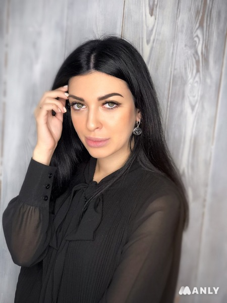
Щербакова Анастасия Александровна
Меня зовут Щербакова Анастасия Александровна.
Читать полностьюСвернуть
Меня зовут Щербакова Анастасия Александровна.
Я являюсь преподавателем английского и китайского языков в школе иностранных языков «Репетитор». Я окончила Дальневосточный Государственный Гуманитарный Университет, где изучала китайский и английский языки. Во время учёбы в университете я ежегодно проходила стажировки в Китае и Республике Корея.
Мне очень нравится работать в замечательной дружной команде школы «Репетитор», где на уроках используют самые передовые, эффективные и привлекательные для детей методы работы.
Главное в моей работе- это научить человека любить то, что он делает, ведь знания открывают весь мир.
С огромным удовольствием делюсь с учениками своими знаниями и опытом, чтобы помочь им исследовать новые горизонты.
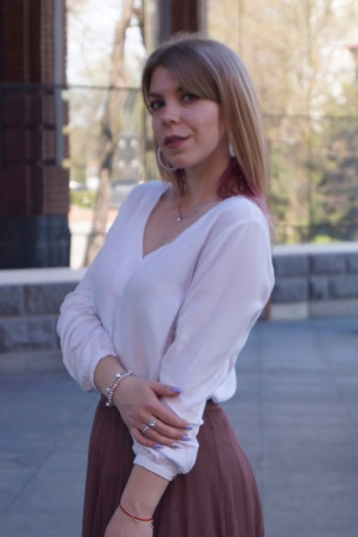
Юдина Полина Сергеевна
Здравствуйте, меня зовут Юдина Полина Сергеевна. Мой путь к профессии учителя начался еще в детстве. Я с теплотой вспоминаю, как моя мама, прекрасный учитель, брала меня с собой на уроки. Думаю, в тот момент в моей голове уже сложилась картинка, кем я буду в будущем – учителем.
Читать полностьюСвернуть
Здравствуйте, меня зовут Юдина Полина Сергеевна. Мой путь к профессии учителя начался еще в детстве. Я с теплотой вспоминаю, как моя мама, прекрасный учитель, брала меня с собой на уроки. Думаю, в тот момент в моей голове уже сложилась картинка, кем я буду в будущем – учителем.
Мое знакомство со школой «Репетитор» началось в 2008 году. Будучи ученицей 8 класса, я решила попробовать изучать английский язык и пришла на первое занятие. Тогда я еще не представляла, как далеко меня заведет мой выбор. Успешно окончив школу «Репетитор», я сдала ЕГЭ по английскому и поступила на бюджет на кафедру иностранных языков Дальневосточного государственного гуманитарного университета и начала заниматься репетиторством.
Сейчас я в профессии учителя уже 4й год. Мои ученики стали для меня настоящей семьей. Видя плоды своих трудов, искренний интерес детей, их успехи в изучении языка, я понимаю, что сделала правильный выбор. Для меня это не просто работа. Это любимое хобби, которое делает меня счастливой. И я стараюсь сделать все, чтобы и мои ученики на моих занятиях чувствовали себя счастливыми и понимали всю важность изучения языка.